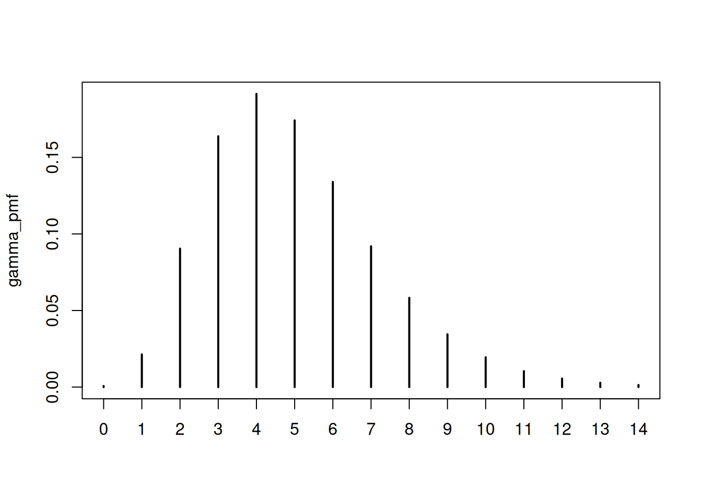
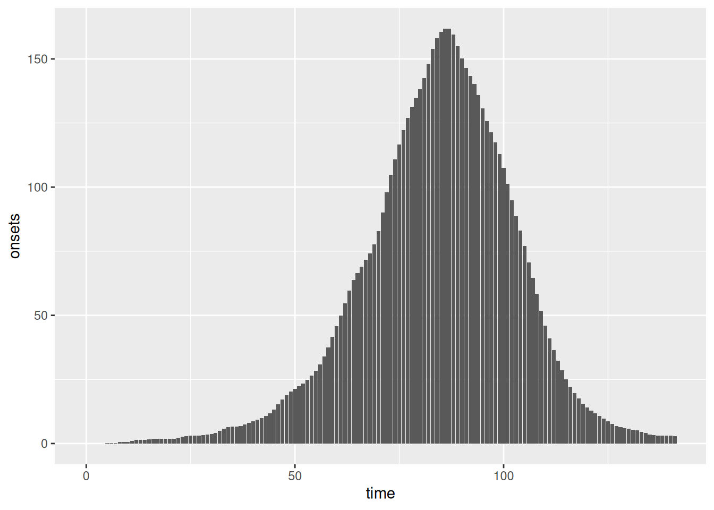
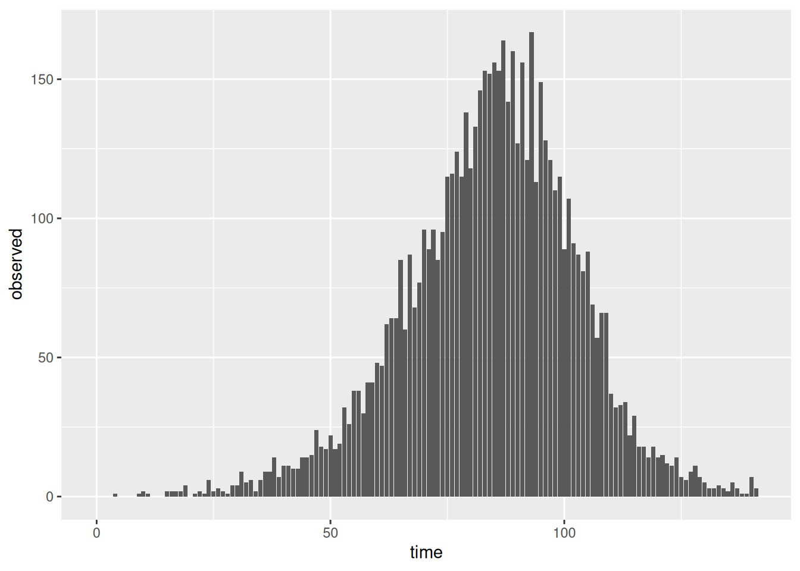
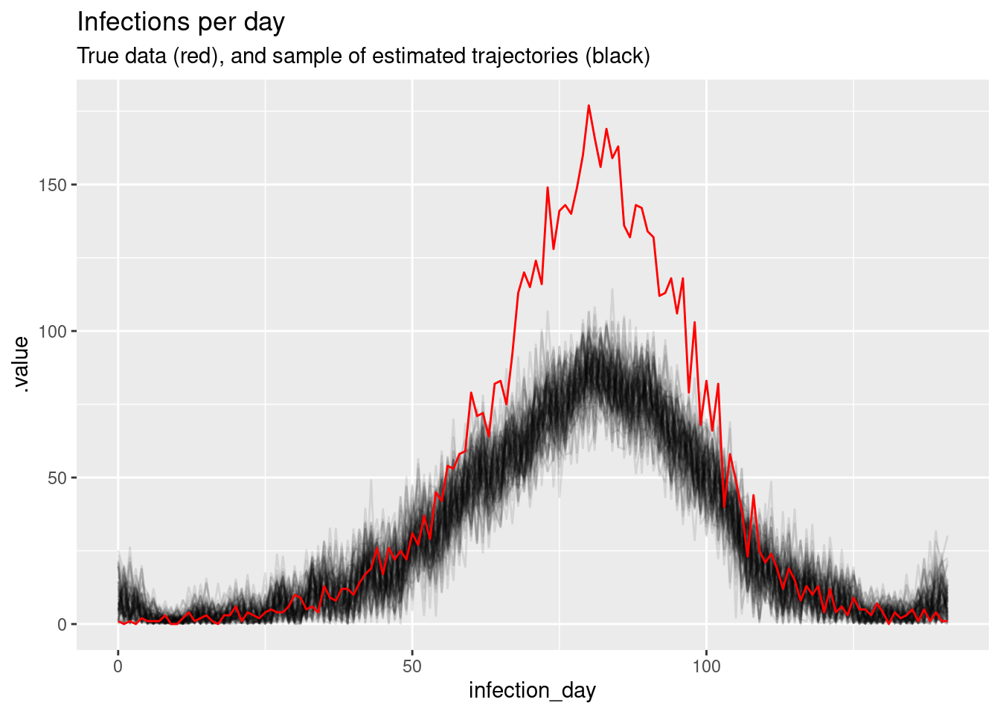

library("nfidd")
library("dplyr")
library("tidyr")
library("ggplot2")
library("tidybayes")Using delay distributions to model the data generating process
Introduction
We’ve now developed a good idea of how epidemiological time delays affect our understanding of an evolving outbreak. So far, we’ve been working with individual line-list data. However, we usually want to model how an outbreak evolves through a whole population. The aim of this session is to introduce how delay distributions can be used to model population-level data generating process during an epidemic.
This means working with aggregated count data. This creates some new issues in correctly accounting for uncertainty. We handle population-level data using convolutions as a way of combining count data with a distribution of individual probabilities. We will have to adjust our continuous probability distributions to work with this using discretisation. We’ll then need to re-introduce additional uncertainty to account for the observation process at a population level.
Slides
Objectives
In this session, we’ll focus on the delay from infection to symptom onset at a population level. First, we will introduce the techniques of convolution and discretisation. We’ll apply these to an aggregated time series of infections in order to simulate observed symptom onsets. Then, we’ll use those simulated symptom onsets to try and reconstruct a time series of infections.
NoteSetup
Source file
The source file of this session is located at sessions/using-delay-distributions-to-model-the-data-generating-process-of-an-epidemic.qmd.
Libraries used
In this session we will use the nfidd package to load a data set of infection times and access stan models and helper functions, the dplyr and tidyr packages for data wrangling, the ggplot2 library for plotting and the tidybayes package for extracting results of the inference.
Tip
The best way to interact with the material is via the Visual Editor of RStudio.
Initialisation
We set a random seed for reproducibility. Setting this ensures that you should get exactly the same results on your computer as we do. We also set an option that makes cmdstanr show line numbers when printing model code. This is not strictly necessary but will help us talk about the models.
set.seed(123)
options(cmdstanr_print_line_numbers = TRUE)Simulating observations from a time series of infections
As before we first simulate the process that generates the data we typically observe. In this session, we’ll focus on the process from infection to symptom onset. Then we’ll use the same model to conduct inference.
Delay distributions and convolutions
In the last session we simulated individual outcomes from a delay distribution, and then re-estimated the corresponding parameters. However, sometimes we do not have data on these individual-level outcomes, either because they are not recorded or because they cannot be shared, for example due to privacy concerns. At the population level, individual-level delays translate into convolutions.
If we have a time series of infections \(I_t\) (\(t=1, 2, 3, \ldots, t_\mathrm{max}\)), where \(t\) denotes the day on which the infections occur, and observable outcomes occur with a delay given by a delay distribution \(p_i\) (\(i=0, 1, 2, \dots, p_\mathrm{max}\)), where \(i\) is the number of days after infection that the observation happens, then the number of observable outcomes \(C_t\) on day \(t\) is given by
\[ C_t = \sum_{i=0}^{i=p_\mathrm{max}} I_{t-i} p_i \]
In other words, the number of observable outcomes on day \(t\) is given by the sum of infections on all previous days multiplied by the probability that those infections are observed on day \(t\). For example, the observable outcomes \(C_t\) could be the number of symptom onsets on day \(t\) and \(p_i\) is the incubation period.
We can use the same data as in the session on biases in delay distributions, but this time we first aggregate this into a daily time series of infections. You can do this using:
inf_ts <- make_daily_infections(infection_times)
Note
As before you can look at the code of the function by typing make_daily_infections. The second part of this function is used to add days without infections with a zero count. This will make our calculations easier later (as otherwise we would have to try and detect these in any models that used this data which could be complicated).
And look at the first few rows of the daily aggregated data:
head(inf_ts)# A tibble: 6 × 2
infection_day infections
<dbl> <int>
1 0 1
2 1 0
3 2 1
4 3 0
5 4 2
6 5 1Now we can convolve the time series with a delay distribution to get a time series of outcomes as suggested above.
Discretising a delay distribution
In our first session, we decided to assume the delay from infection to symptom onset had a gamma distribution. However, if we want to use the gamma distribution with shape 5 and rate 1 as before, we face a familiar issue. The gamma distribution is a continuous distribution, but now our delay data are in days which are discrete entities. We will assume that both events that make up the delay (here infection and symptom onset) are observed as daily counts (e.g. as number of infections/symptom onsets by calendar date). Therefore, both observations are censored (as events are rounded to the nearest date). This means that our distribution is double interval censored which we encountered in the the biases in delay distribution session, so we need to use the same ideas introduced in that session.
NoteMathematical Definition (optional): Discretising a delay distribution subject to double interval censoring
The cumulative distribution function (CDF) (\(F(t)\)) of a distribution that has a daily censored primary event can be expressed as,
\[ F^*(t) = \int_0^1 F(t - u) du \]
In effect, this is saying that the daily censored CDF is the average of the continuous distributions CDF over all possible event times (here between 0 and 1).
The probability mass function (PMF) of this distribution when observed as a daily process (i.e. the secondary event is also daily censored) is then
\[ f_t \propto F^*(t + 1) - F^*(t - 1) \]
The important point is that the ultimately observed PMF is a combination of a primary event daily censoring process and a secondary event daily censoring process.
We can think about this via simulation. We do so by generating many replicates of the corresponding random delay, taking into account that we have already rounded down our infection times to infection days. This means that discretising a delay in this context is double censoring as we discussed in the the biases in delay distribution session. In the absence of any other information or model, we assume for our simulation that infection occurred at some random time during the day, with each time equally likely. We can then apply the incubation period using a continuous probability distribution, before once again rounding down to get the day of symptom onset (mimicking daily reporting). We repeat this many times to get the probability mass function that allows us to go from infection days to symptom onset days.
You can view the function we have written do this using:
censored_delay_pmffunction (rgen, max, n = 1e+06, ...)
{
first <- runif(n, min = 0, max = 1)
second <- first + rgen(n, ...)
delay <- floor(second)
counts <- table(factor(delay, levels = seq(0, max)))
pmf <- counts/sum(counts)
return(pmf)
}
<bytecode: 0x56101fa92750>
<environment: namespace:nfidd>
NoteTake 3 minutes
Try to understand the censored_delay_pmf() function above. Try it with a few different probability distributions and parameters, e.g. for the parameters given above and a maximum delay of 2 weeks (14 days) it would be:
gamma_pmf <- censored_delay_pmf(rgamma, max = 14, shape = 5, rate = 1)
gamma_pmf
0 1 2 3 4 5
0.0006738544 0.0213000084 0.0904146458 0.1637886841 0.1914657786 0.1741648410
6 7 8 9 10 11
0.1339778840 0.0919285654 0.0582628773 0.0344727114 0.0194606761 0.0103971836
12 13 14
0.0055410260 0.0027965460 0.0013547178 plot(gamma_pmf)
Applying a convolution
Next we apply a convolution with the discretised incubation period distribution to the time series of infections, to generate a time series of symptom onsets. The function we have written to do this is called convolve_with_delay
convolve_with_delayfunction (ts, delay_pmf)
{
max_delay <- length(delay_pmf) - 1
convolved <- numeric(length(ts))
for (i in seq_along(ts)) {
first_index <- max(1, i - max_delay)
ts_segment <- ts[seq(first_index, i)]
pmf <- rev(delay_pmf[seq_len(i - first_index + 1)])
ret <- sum(ts_segment * pmf)
convolved[i] <- ret
}
convolved
}
<bytecode: 0x561020d9bcf8>
<environment: namespace:nfidd>
TipTake 5 minutes
Try to understand the convolve_with_delay() function above. Try it with a few different time series and delay distributions. How would you create the time series of symptom onsets from infections, using the discretised gamma distribution created above (saved in gamma_pmf)?
NoteSolution
onsets <- convolve_with_delay(inf_ts$infections, gamma_pmf)Let’s examine the convolution result to understand how it works. First, we look at the infections and delay distribution:
head(inf_ts$infections)[1] 1 0 1 0 2 1head(gamma_pmf)
0 1 2 3 4 5
0.0006738544 0.0213000084 0.0904146458 0.1637886841 0.1914657786 0.1741648410 Now let’s look at the resulting onsets:
head(onsets)[1] 0.0006738544 0.0213000084 0.0910885002 0.1850886925 0.2832281333
[6] 0.3812273963To understand what’s happening, let’s work through the first few rows.
For day 1, only infections from day 1 can contribute:
inf_ts$infections[1] * gamma_pmf[1] 0
0.0006738544 For day 2, infections from both day 1 and day 2 can contribute:
inf_ts$infections[1] * gamma_pmf[2] + inf_ts$infections[2] * gamma_pmf[1] 1
0.02130001 For day 3, infections from days 1, 2, and 3 can contribute:
inf_ts$infections[1] * gamma_pmf[3] + inf_ts$infections[2] * gamma_pmf[2] + inf_ts$infections[3] * gamma_pmf[1] 2
0.0910885 Each day’s onsets are the sum of all previous infections weighted by the probability of observing them on that day.
We can plot these symptom onsets:
combined <- inf_ts |>
rename(time = infection_day) |>
mutate(onsets = onsets)
ggplot(combined, aes(x = time, y = onsets)) +
geom_bar(stat = "identity")
Do they look similar to the plot of symptom onsets in the session on delay distributions?
Observation uncertainty
Usually not all data are perfectly observed. Also, the convolution we applied is a deterministic operation that brushes over the fact that individual delays are random. We should therefore find another way to model the variation these processes introduce.
Given that we are now dealing with count data a natural choice is the Poisson distribution. We can use this to generate uncertainty around our convolved data.
combined <- combined |>
mutate(reported_onsets = rpois(n(), onsets))
TipTake 5 minutes
Does a plot of these observations look more like the plots from the session on delay distributions than the convolution plotted above?
NoteSolution
ggplot(combined, aes(x = time, y = reported_onsets)) +
geom_bar(stat = "identity")
Estimating a time series of infections
As in previous sessions, we don’t usually have data on infections. We now create a model that uses symptom onsets to estimate the number of infections over time. We’ll base the model on an uninformed prior and work forward from what we know about the observation process.
mod <- nfidd_cmdstan_model("estimate-infections")
mod 1: functions {
2: #include "functions/convolve_with_delay.stan"
3: }
4:
5: data {
6: int n; // number of time days
7: array[n] int obs; // observed onsets
8: int<lower = 1> ip_max; // max incubation period
9: // probability mass function of incubation period distribution (first index zero)
10: array[ip_max + 1] real ip_pmf;
11: }
12:
13: parameters {
14: array[n] real<lower = 0> infections;
15: }
16:
17: transformed parameters {
18: array[n] real onsets = convolve_with_delay(infections, ip_pmf);
19: }
20:
21: model {
22: // priors
23: infections ~ normal(0, 10) T[0, ];
24: obs ~ poisson(onsets);
25: }
TipTake 5 minutes
Familiarise yourself with the model above. Unlike before there is now a functions block at the beginning of the model (lines 1-3), where we load a function called convolve_with_delay() (line 2) from a file of the same name which can be found in the subdirectory functions of the inst/stan directory or viewed on the github repo. The functions correspond exactly to our earlier R function of the same name. Later, this functions is called in the model block, to generate the time series of symptom onsets (line 18).
What is the prior assumption on the daily number of infections? Which line defines the likelihood, and how does it relate to the section about observation uncertainty above?
NoteSolution
The model assumes that infections every day are independent from infections on any other day (line 23) and determined only by the number of symptom onsets that they result in (line 18). Line 24 defines the likelihood, and it does so using the Poisson observation uncertainty we used above.
We can now use this model to conduct inference, i.e. to try to reconstruct the time series of infections from the time series of onsets that we generated earlier.
data <- list(
n = nrow(combined),
obs = combined$reported_onsets,
ip_max = length(gamma_pmf) - 1,
ip_pmf = gamma_pmf
)
inf_fit <- nfidd_sample(mod, data = data)
Caution
Note that this code might take a few minutes to run. We have added the parallel_chains option to make use of any paralle hardware you may ave. If you don’t have 4 computing cores and/or the code runs very slowly, you could try only running 2 chains (chains = 2) and/or fewer samples (iter_warmup = 250, iter_sampling = 250).
Tip
In this model, we have estimated many more parameters than in the previous models: instead of e.g. 2 parameters of a probability distribution, we now have a total of time points for which we estimate the number of infections. This is because we don’t have a model for the process that generates infections. How would this be different if we e.g. used an SIR model here?
We can see the first few estimates of the number of infections using:
inf_fit variable mean median sd mad q5 q95 rhat ess_bulk
lp__ 20151.14 20151.23 9.48 9.66 20134.72 20166.31 1.00 621
infections[1] 7.85 6.68 5.78 5.78 0.52 19.20 1.00 1486
infections[2] 7.81 6.57 5.80 5.79 0.74 18.66 1.00 2001
infections[3] 7.82 6.37 6.14 5.75 0.64 20.08 1.00 1847
infections[4] 7.93 6.76 5.87 5.80 0.60 18.70 1.00 1621
infections[5] 8.56 7.86 5.54 5.65 1.03 18.99 1.00 1572
infections[6] 4.12 3.31 3.42 3.13 0.31 10.69 1.00 2060
infections[7] 2.54 1.77 2.40 1.85 0.13 7.27 1.00 2171
infections[8] 2.03 1.49 1.83 1.54 0.12 5.58 1.00 2271
infections[9] 1.70 1.23 1.57 1.25 0.10 5.02 1.00 2208
ess_tail
1277
1066
1061
1001
1014
795
1163
972
1165
990
# showing 10 of 285 rows (change via 'max_rows' argument or 'cmdstanr_max_rows' option)Again, we can do a posterior predictive check by plotting the modelled estimates of the time series of infections (with uncertainty) against our original data. Does it look like a good fit?
# Extract posterior draws
inf_posterior <- inf_fit |>
gather_draws(infections[infection_day]) |>
ungroup() |>
mutate(infection_day = infection_day - 1) |>
filter(.draw %in% sample(.draw, 100))
ggplot(mapping = aes(x = infection_day)) +
geom_line(
data = inf_posterior, mapping = aes(y = .value, group = .draw), alpha = 0.1
) +
geom_line(data = inf_ts, mapping = aes(y = infections), colour = "red") +
labs(title = "Infections per day",
subtitle = "True data (red), and sample of estimated trajectories (black)")
Tip
This time we used the gather_draws() function included in tidybayes to extract the inference results. This is particularly useful when dealing with arrays such as inference because it allows to extract them with a given index (here: [day]).
Going further
Challenge
Above, we used a Poisson distribution to characterise uncertainty. In the Poisson distribution, the variance is the same as the mean. Another common choice is the negative binomial distribution, which has a more flexible relationship between variance and mean. If you re-did the analysis above with the negative binomial distribution, what would be the difference?
We could have used the individual-level model of the previous section to try to estimate the number of infections with a known delay distribution by estimating each individual infection time. How would this look in stan code? Would you expect it to yield a different result?
Methods in practice
- The
primarycensoredpackage provides tools for efficiently working with censored and truncated delay distributions. It offers both theoretical background on primary and secondary interval censoring and right truncation, as well as practical functions for estimating and using these distributions. The package implements deterministic methods that are significantly faster than the Monte Carlo approach used incensored_delay_pmf()while providing exact results.
Wrap up
- Review what you’ve learned in this session with the learning objectives
- Share your questions and thoughts